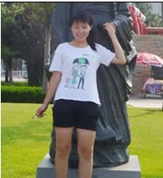

教师介绍

周科，女，小学语文特级教师。长期致力于语文教学的研究和探索，积累了丰富的教学经验，形成了善于启发、激励、活而实的教学风格。曾发表的论文：《在语文教学中培养学生的科研能力》、《在语文教学中培养求异思维的探讨》、《“图象型说明题”思维能级的界定》。其论文成果先后获得国家级科研51免费论文网一等奖、二等奖。曾参加江西省教学评优活动，获录像课省级一等奖，教学设计省级一等奖。先后获得江西省优秀青年教师、萍乡市优秀少先队辅导员、市青年骨干教师、模范班主任、优秀校长、优秀共产党员、国家级科研工作先进实验教师等荣誉。